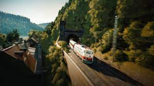
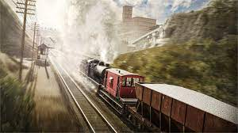
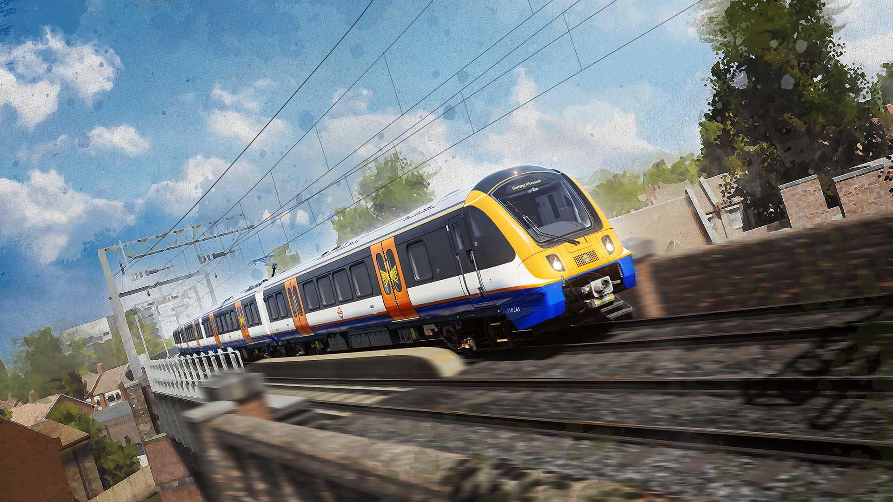

Sand Patch Grade

Great Western Express

West Somerset Railway

Ruhr Sieg Nord

Long Island Railroad

Northern Transpennine

Peninsula Corridor

Oakville Subdivision

Hauptstrecke Rhein Ruhr

Isle of Wight

Southeastern Highspeed

Arosa Linie

Linke Rheinstrecke

Peak Forest Railway

London Overground: Suffragette Line

Semmeringbahn